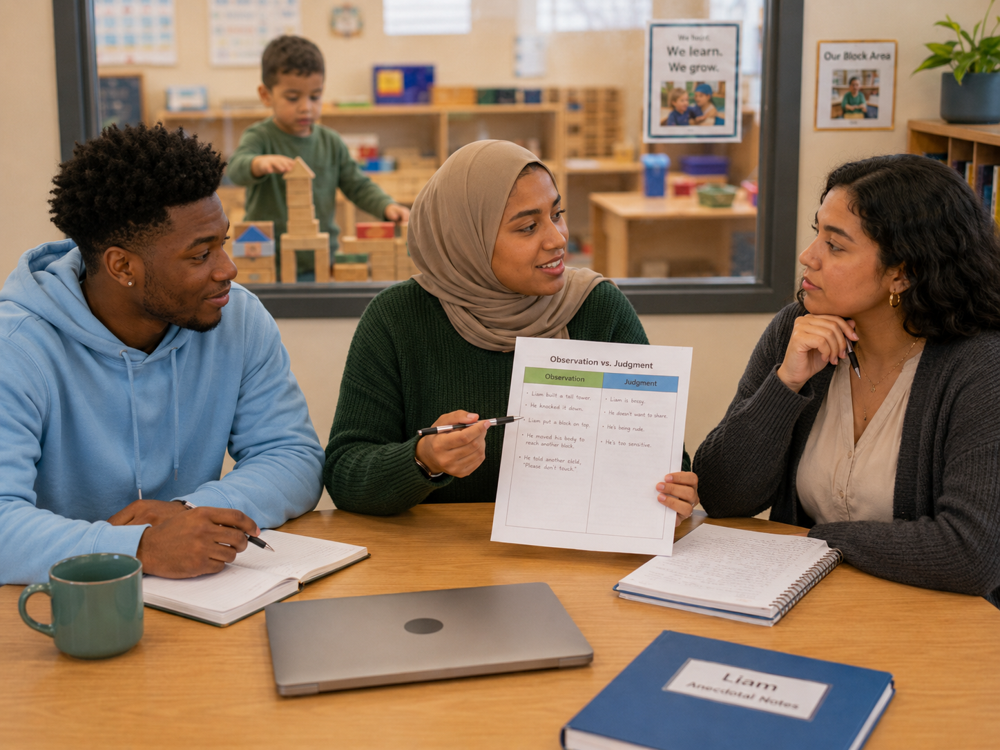

Observation vs. judgment
🔎 Choose the objective note
Which entry records observable evidence rather than a label or inference?
Observation, documentation, and assessment

Jordan: “Liam was frustrated and selfish when he grabbed the long block.”
Aaliyah: “Did you actually see selfish?”
Maya: “I wrote, ‘Liam reached across the structure, took the long rectangular block from the floor beside Nia, held it against his chest, and said, “I need it.”’”
Jordan: “That sounds like a police report.”
Maya: “Maybe, but it separates what happened from what I think it meant.”
Aaliyah: “If we begin with labels like selfish, shy, aggressive, or advanced, our assumptions can shape everything that follows.”
Jordan: “So first we document what we can see and hear. Then we look for patterns, development, and context.”
Maya: “And families may see things we do not see at school.”
Which entry records observable evidence rather than a label or inference?
Choose the best description for each method.
Across several days, Liam takes long blocks, studies bridge pictures, and says, “We need a road under it.” What is the strongest interpretation?
A teacher writes “Sofia is shy” after one quiet circle time. What should happen next?
Children repeatedly compare tower heights, count blocks, and revise unstable bases. What is the best response?
Why should family observations be included in assessment?
Which practice is most professionally responsible?
Observation shows children rarely use the science table. What is the strongest response?
Which sequence best represents responsible practice?
Complete this sentence: An objective observation is useful because…
Objective records provide evidence that can be examined rather than labels that quietly become conclusions.
Did your response mention patterns, development, context, bias, curriculum, family knowledge, or teacher decisions?
Observation is not passive watching. It takes concentration, practice, ethical care, and willingness to revise an interpretation.